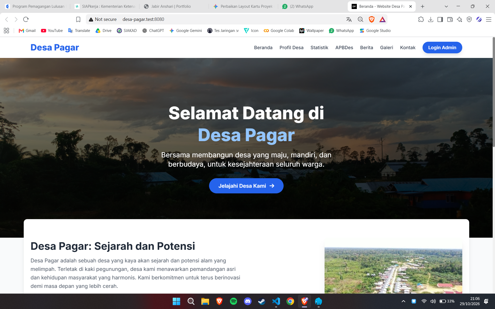
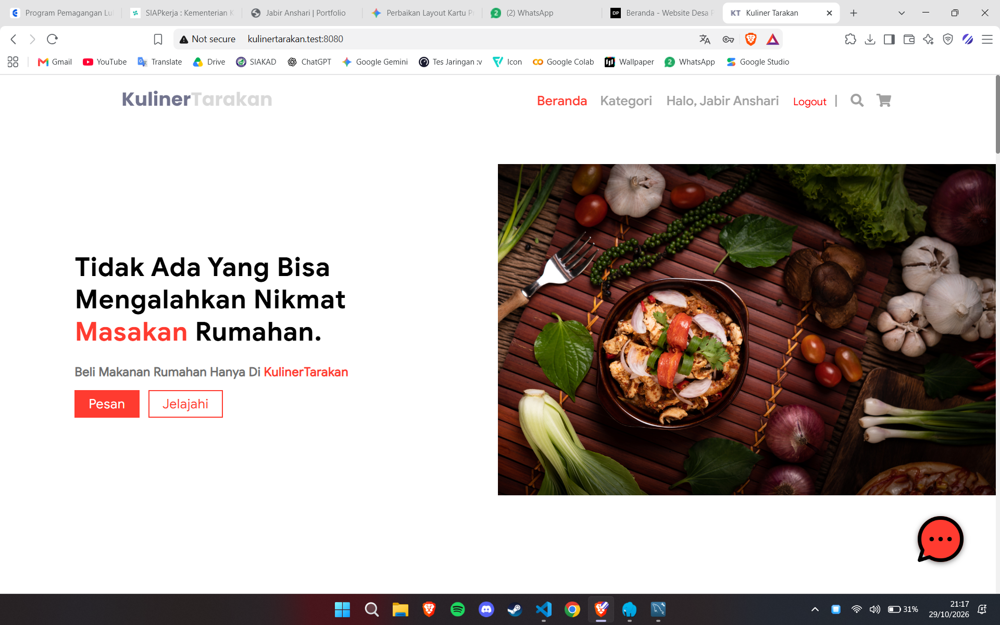
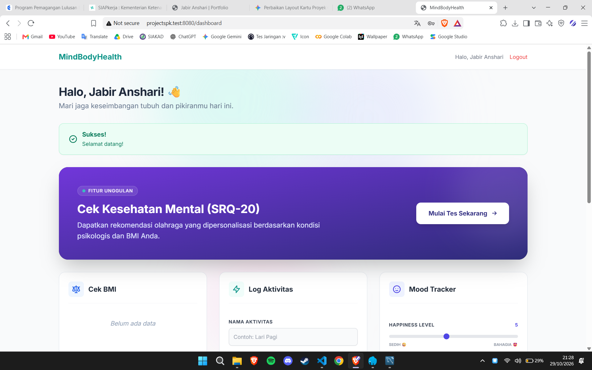

Featured Projects

YOLOv11 Gambling Website Detection
Desktop application that detects gambling-related objects from website screenshots using Computer Vision and the YOLOv11 object detection model.

Website Profil Desa Pagar
Village information system developed to provide public information, village profile, news, gallery, and administrative services digitally.

Kuliner Tarakan
Culinary information website that helps users discover restaurants, traditional foods, culinary destinations, and detailed information about each location in Tarakan.

MindBodyHealth
Web-based application designed to help users monitor their mental and physical health through self-assessment, health education, and activity tracking features.